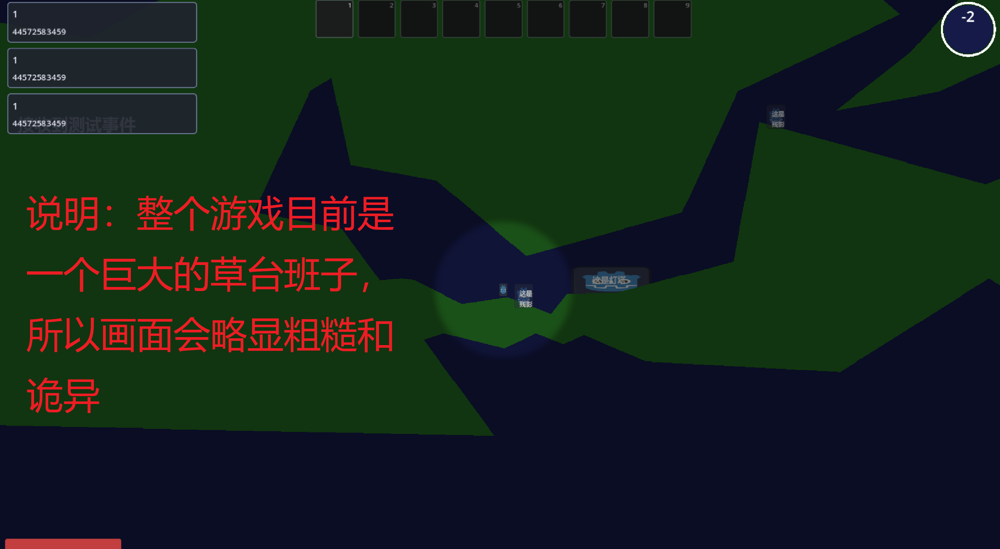
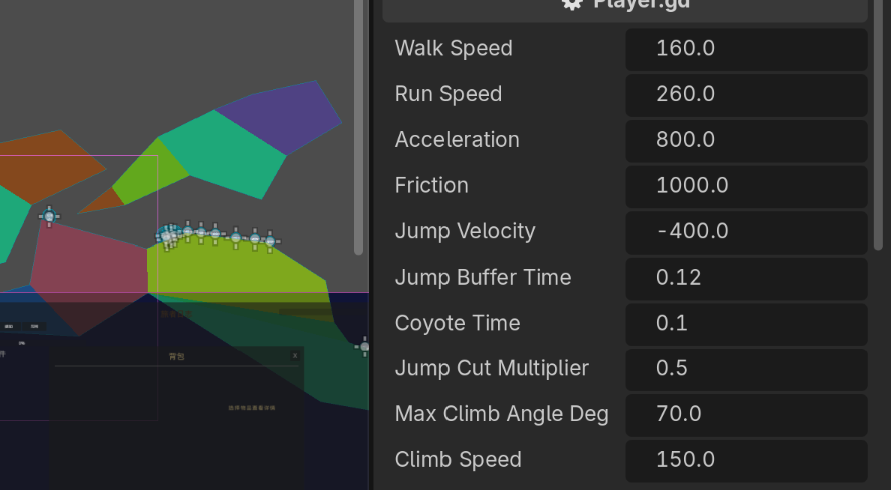

程序也要记笔记
前面写过的程序，关掉就什么都不剩了。这一章让程序学会「记笔记」： 把数据写进文件、下次打开再读回来。下面会分别用 C++ 和 Python 演示， 最后动手做一个能保存内容的小程序。
开始模块 1 第 1 小节 →程序也要记笔记
之前我们在课程中手搓了很多程序。然而比起 AI 做出来的，这些程序都有一个共同的缺陷： 数据都不能保存。打开后，完成特定功能，然后关闭——什么东西都留不下来。
你也许会说：让 AI 帮我改数据不就行了？确实，AI 可以照着指令修改数据， 但这种方式效率极低，而且不适用于一些实时修改和精细的修改。
举一个具体的例子。下面这个，是作者做的一个游戏：

想找最适合玩家的移动速度，需要反复「修改速度 → 移动一下看看」地试。 如果每次都得在聊天框里输入「把玩家速度改成……」，再等 AI 响应，那调试一百次人都麻了。
在作者做的这个游戏里，编辑器可以在游戏运行时直接手动修改移动速度等各种参数。 这比在聊天框里反复输入指令、再等响应方便得多。

其实，这个编辑器本质上是个 C++ 程序。它能把开发者自定义的变量 （也包括了「玩家速度」这个变量）存储在电脑里。这就涉及到了数据的 读和写。
本章教程，我们就来实现一个同款的读写功能：让程序把数据写进文件、再读回来。 下面两小节先按语言介绍文件读写的方法，最后一小节再做一个真正带读写功能的项目。
文件：电脑里的笔记本
让程序「记住」东西，靠的是文件。你可以把文件理解成电脑里的一个 笔记本：程序往里面写字，关掉程序、甚至关掉电脑，字都还在；下次再打开这个本子， 之前写的内容还能读回来。
无论用哪种语言，文件读写都遵循同一套流程：打开 → 操作 → 关闭。 其中最后一步「关闭」最容易被新手忽略，却很重要。
写完不关闭，内容可能还停留在缓冲区里没真正落到硬盘——程序一关，数据就没了。 所以写完后一定要把文件关上。两门语言都提供了明确的方式来做这件事。
1. 文件 = 电脑里的笔记本，能让数据在程序关闭后依然保留。
2. 两类操作：写（存进去）和读（取出来）。
3. 标准流程：打开 → 操作 → 关闭，关闭这一步不能省。
写文件
先从「写」开始。我们做一个最简单的动作：把一句话写进名为 note.txt 的文件。
#include <fstream>
using namespace std;
int main() {
ofstream f("note.txt"); // 打开（创建）一个文件用来写
f << "今天学会文件读写啦"; // 往里写一句话
f.close(); // 关掉，确保内容真正写进去
return 0;
}f = open("note.txt", "w") # 打开（创建）一个文件用来写
f.write("今天学会文件读写啦") # 往里写一句话
f.close() # 关掉，确保内容真正写进去上面这段代码对应之前说的三步：
在 C++ 里，ofstream f("note.txt") 打开一个专门用于「out（输出）」的文件；f << 内容 的写法和 cout << 输出到屏幕几乎一样；最后用 f.close() 关闭。
在 Python 里，open("note.txt", "w") 以写（w = write）模式打开文件；f.write(内容) 把字符串写进去；最后用 f.close() 关闭。
Python 还有更省心、不用手动关的写法——用 with 自动帮你关
with open("note.txt", "w") as f:
f.write("今天学会文件读写啦")
# 退出 with 代码块时，文件会被自动关闭下面这个运行台模拟了「写文件」的效果——它把你的内容写进一个虚拟的 note.txt（保存在浏览器内存里，关闭页面会清空），方便你直观看到「文件里现在有什么」：
f = open("note.txt", "w")
f.write("hi")
f.close()
读文件
写进去是为了之后能用。现在反过来：把 note.txt 里的东西读出来，显示在屏幕上。
#include <fstream>
#include <string>
using namespace std;
int main() {
ifstream f("note.txt"); // 打开一个文件用来读
string s;
getline(f, s); // 读一整行，存进字符串 s
cout << s; // 显示出来
f.close();
return 0;
}f = open("note.txt", "r") # 以读（r = read）模式打开
text = f.read() # 把全部内容读出来
print(text) # 显示出来
f.close()和写文件几乎对称，也分三步：
在 C++ 里，ifstream f("note.txt") 专门用于「in（输入）」；getline(f, s) 读一整行，多行就多读几次；最后用 f.close() 关闭。前提是这个文件已经存在。
在 Python 里，open("note.txt", "r") 以读模式打开；f.read() 一次读出全部内容，f.readline() 则只读一行；最后用 f.close() 关闭。前提是这个文件已经存在。
下面这个运行台模拟「读文件」——它会读取上一小节那个虚拟 note.txt里的内容。如果还没写过，就会提示文件是空的：
ifstream f("note.txt") 读取，最基本的前提是？读写一起用
真实场景里，写和读常常配合着用：先写一份，过会儿再读回来。还有一类常见需求—— 不想覆盖旧内容，只想在末尾接着写。这就需要换一种打开模式：追加（append）。
例如，每次启动游戏都记一行日志，就该用追加模式：
#include <fstream>
using namespace std;
int main() {
ofstream f("log.txt", ios::app); // 以追加模式打开
f << "玩家在第 3 关失败了一次\n";
f.close();
return 0;
}with open("log.txt", "a") as f: # a = append，追加
f.write("玩家在第 3 关失败了一次\n")下面这个「虚拟笔记本」把两种模式都做出来了：用写清空重写，或用追加在末尾续写； 随时点「读取全部」验证文件里现在到底存了什么。它和前面两个运行台共享同一个虚拟文件。
1. 真实程序里，写和读通常配合使用：先写，过会儿再读回来。
2. "w" 写模式会先清空再写；"a" 追加模式在末尾续写，保留旧内容。
3. 记日志、存多条记录这类需求，用追加模式最合适。
项目：带读写功能的小程序
这一章的收尾项目，是一个简易备忘录：你输入一句话，它存进文件；下次打开程序时， 它会把上次存的内容读出来显示给你。这正是开头「游戏速度配置」那个思路的简化版—— 把需要长期记住的数据放进文件，启动时再读回来。
#include <fstream>
#include <iostream>
#include <string>
using namespace std;
int main() {
// 启动时先读：把上次存的内容显示出来
ifstream in("memo.txt");
string old;
if (getline(in, old)) {
cout << "上次记的是：" << old << endl;
} else {
cout << "（还没有任何记录）" << endl;
}
in.close();
// 这次要记的新内容
string note;
cout << "记点什么：";
getline(cin, note);
// 写：覆盖保存这一条
ofstream out("memo.txt");
out << note;
out.close();
cout << "已保存：" << note << endl;
return 0;
}# 启动时先读：把上次存的内容显示出来
try:
with open("memo.txt", "r") as f:
old = f.read()
print("上次记的是：" + old)
except FileNotFoundError:
print("（还没有任何记录）")
# 这次要记的新内容
note = input("记点什么：")
# 写：覆盖保存这一条
with open("memo.txt", "w") as f:
f.write(note)
print("已保存：" + note)这段代码把本章三点都用上了：
C++ 用 getline(in, old) 判断有没有读到内容；读不到说明文件不存在或为空。
Python 用 try / except FileNotFoundError 捕获「文件还不存在」的情况。
本页的运行台是模拟写入浏览器内存，关掉页面就清空，用来理解概念。 想真正把数据存到硬盘，请把上面这段代码复制到 项目系统 的内置 IDE，或你本地对应的开发环境里运行；运行后去文件夹里看一眼 memo.txt，会真实存在。
✅ 为什么需要文件：让数据在程序关闭后依然保留
✅ 标准流程：打开 → 操作 → 关闭，关闭不能省
✅ 写文件（ofstream）
✅ 读文件（ifstream）
✅ 追加模式 "a"：保留旧内容，末尾续写
✅ 用读写做了一个能保存内容的简易备忘录
✅ 为什么需要文件：让数据在程序关闭后依然保留
✅ 标准流程：打开 → 操作 → 关闭，关闭不能省
✅ 写文件（open(...,"w")，推荐配合 with）
✅ 读文件（open(...,"r")，配合 try/except 处理文件不存在）
✅ 追加模式 "a"：保留旧内容，末尾续写
✅ 用读写做了一个能保存内容的简易备忘录